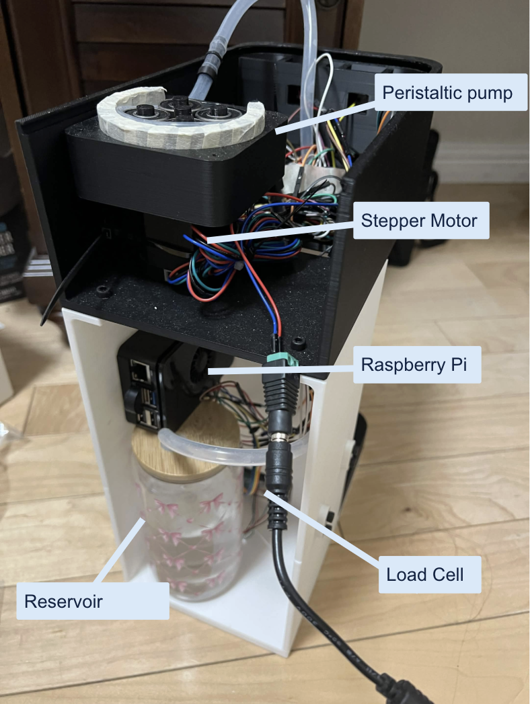
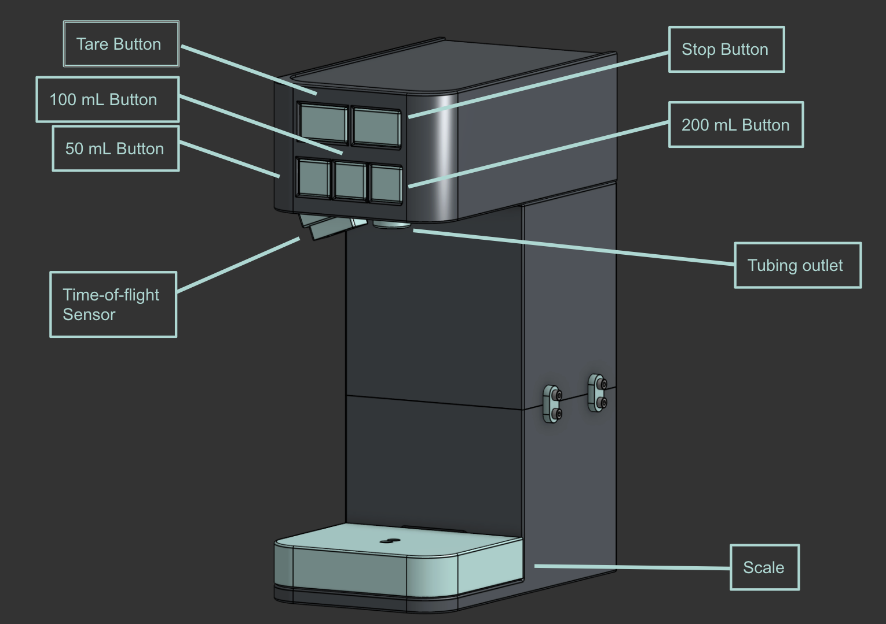

Voice-controlled.
Liquid
dispensing.
I want to make measuring and dispensing liquids easier for people with visual impairments while keeping the solution accessible and affordable.

Interviews
Through the interviews I conducted with visually impaired members of the Vista Center community, one theme that came up multiple times was the ability to measure and transfer liquids reliably, sometimes not just in cooking. One member described pouring soup from one bowl to the other but ended up spilling most of it.
I have seen friends around me, and family members of friends, experience visual impairment and the struggles they face in daily life. By making a device that is simple to build and use, I hope to promote their independence and improve their quality of life.
Design
The design uses a Raspberry Pi as the main controller, a bearing-based 3D printed peristaltic pump, buttons, a load cell scale, and a time-of-flight sensor to read the liquid level relative to the cup.
Read the hardware & software notes ↗- 01Place a cup on the scale.
- 02Press tare to set the starting weight to zero.
- 03Select an amount through buttons or speaking out loud.
- 04The system measures the added weight and stops at the target.
The stop button can also stop dispensing. The near-rim stop is experimental; reliable overflow prevention has not been established.

Testing
I tested the dispenser using three quantities: 10, 30, and 100 mL. I said the quantity into the microphone and the dispenser poured it. Then I measured the cup on a separate scale and subtracted the starting mass to find the amount added. I used the approximation of 1 g ≈ 1 mL for water.
I did 15 trials in the first round, five for each amount. The output overshot in every single trial. Because of the overshoots, I added a linear compensation model to adjust the point where the pump stops, and then did another 15 trials with it turned on, five for each amount.
| Requested | Round 1 | Round 2 |
|---|---|---|
| 10 mL | 3.54 g (5 trials) | 0.72 g (5 trials) |
| 30 mL | 4.36 g (5 trials) | 0.84 g (5 trials) |
| 100 mL | 11.42 g (5 trials) | 1.78 g (5 trials) |
The errors were lower at all three quantities in round 2, so the compensation seems to have helped. I’d still want more trials to see if it stays consistent.
Test limits: I used the same cup for every trial. In some trials I also added water to a cup that already had water in it instead of emptying it, so the starting load wasn’t consistent. Some water also kept dripping from the tubing after the pump stopped. Everything I tested was with water, so other liquids would need to be tested too.
Revision
With the off-the-shelf pump, filling 250 mL would take around 5 minutes with 2 mm tubing and over 3 minutes with 3 mm tubing, which was way too long for everyday use. These are the changes I made:
- 3D printed peristaltic pump: I moved to a 3D printed peristaltic pump so I could adjust the pump for the tubing size.
- 6 mm inner-diameter tubing: I settled on 6 mm ID so more liquid could move through the tube with each rotation.
- Adjustable spacer and bearing stacks: The spacer allows me to adjust for different sized tubing, and the bearing stacks roll along the tube and push the liquid through.
- Overshoot compensation: I added a linear compensation model to adjust the point where the pump stops, accounting for the latency between the scale reading and the motor stopping and the water that keeps dripping afterward.
Estimated time: Around 48 seconds for 250 mL with 6 mm tubing. Measuring the real flow rate is still a next step.
Sources
My report includes the motivation, system design, evaluation, limitations, and sources.